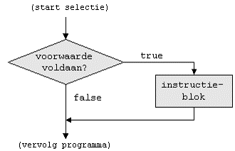
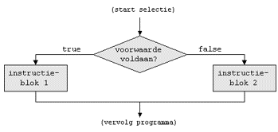
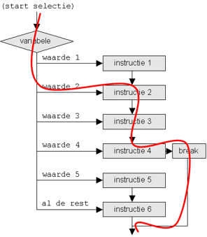

Op Youtube
Deze video maakt deel uit van de IIP playlist van de Youtube channel van Rogier van der Linde.
Let op: deze video's zijn al een paar jaar oud, dus hier en daar kunnen kleine afwijkingen voorkomen met deze cursus, die wel altijd up-to-date is.
Operatoren
Relationeel
Relationele operatoren worden gebruikt om twee waarden met elkaar te vergelijken. Het resultaat van een
vergelijking is altijd een boolean (bool).
| Operator | Beschrijving | Voorbeeld |
|---|---|---|
| == | gelijk aan | x == 100 |
| != | niet gelijk aan | x != 100 |
| < | kleiner dan | x < 100 |
| > | groter dan | x > 100 |
| <= | kleiner dan of gelijk aan | x <= 100 |
| >= | groter dan of gelijk aan | x >= 100 |
Logisch
Dit zijn operatoren op booleans (waar/niet waar), en hebben zelf ook weer een boolean als resultaat (waar/niet waar). Overzicht:
| Operator | Beschrijving |
|---|---|
&& |
AND (logische EN) |
|| |
OR (logische OF) |
! |
NOT (logische NIET) |
Alle mogelijke combinaties (men noemt dit waarheidstabellen):
A |
B |
A && B |
A || B |
|---|---|---|---|
false |
false |
false |
false |
false |
true |
false |
true |
true |
false |
false |
true |
true |
true |
true |
true |
A |
!A |
|---|---|
false |
true |
true |
false |
Voorbeelden
int a = 10;
int b = 5;
bool test1 = (a > b) && (b >= 0); // true
bool test2 = (a < b) || (b < 0); // false
bool test3 = !(a == b); // true
bool test4 = !test1; // false
bool test5 = test1 && test3; // true
string username = "User123";
bool isValidUsername = username.Length >= 6 && !username.Contains(" "); // true
bool isLowercase = username.ToLower() == username; // false
char ch1 = 'B';
bool isLowerLetter = ch1 >= 'a' && ch1 <= 'z'; // false
bool isUpperLetter = ch1 >= 'A' && ch1 <= 'Z'; // true
bool isLetter = isLowerLetter || isUpperLetter; // true
bool isVowel = "aeiou".Contains(ch1.ToString().ToLower()); // false
bool isConsonant = !isVowel; // true
Selectie-structuren
Met behulp van selectie-structuren kan je bepalen welk(e) statement(s) moet(en) uitgevoerd worden op basis van een voorwaarde (= conditie).
IF-selectie
Indien de voorwaarde true oplevert, worden de statements binnen de accolades uitgevoerd.

if (voorwaarde)
{
// statements indien waar
}Code voorbeeld:
int getal = 10;
if (getal > 5)
{
Console.WriteLine("Het getal is groter dan 5");
}Het getal is groter dan 5
IF ELSE-selectie
Indien de voorwaarde true oplevert, worden de statements binnen het if-blok uitgevoerd.
In het andere geval, worden de statements binnen het else-blok uitgevoerd.

if (voorwaarde)
{
// statements indien waar
}
else
{
// statements indien niet waar
}Code voorbeeld:
int leeftijd = 15;
if (leeftijd >= 18)
{
Console.WriteLine("Je bent oud genoeg om te stemmen");
}
else
{
Console.WriteLine("Je bent nog niet oud genoeg om te stemmen");
}Je bent nog niet oud genoeg om te stemmen
Multiple IF ELSE-selectie
De multiple IF – ELSE structuur is een uitbreiding op de gewone IF ELSE-structuur, waarbij je meerdere voorwaarden controleert:
if (voorwaarde1)
{
// instructies indien voorwaarde1 waar
}
else if (voorwaarde2)
{
// instructies indien voorwaarde2 waar
}
else if (voorwaarde3)
{
// instructies indien voorwaarde3 waar
}
else
{
// instructies in alle andere gevallen
}Opmerking: het laatste else-blok is optioneel.
Code voorbeeld:
string maand = "sep";
if (maand == "feb")
{
Console.WriteLine("Deze maand telt 28 dagen");
}
else if (maand == "apr" || maand == "jun" || maand == "sep" || maand == "nov")
{
Console.WriteLine("Deze maand telt 30 dagen");
}
else
{
Console.WriteLine("De maand telt 31 dagen");
}
Deze maand telt 30 dagen
SWITCH-CASE selectie
Bij een switch-case selectie wordt een variabele vergeleken met een reeks waarden, waarna de bijhorende instructies uitgevoerd worden.

switch (variabele)
{
case (waarde 1): instructie 1; break;
case (waarde 2): instructie 2; break;
case (waarde 3): instructie 3; break;
...
case (waarde N): instructie N; break;
default: instructie N+1;
}
Opmerking: het default-label zal uitgevoerd worden indien de waarde van de variabele met geen enkele case-waarde overeenkomt. Het opnemen van een default-label is optioneel.
Code voorbeeld:
int dagNummer = 4;
switch (dagNummer)
{
case 1: Console.Write("maandag"); break;
case 2: Console.Write("dinsdag"); break;
case 3: Console.Write("woensdag"); break;
case 4: Console.Write("donderdag"); break;
case 5: Console.Write("vrijdag"); break;
case 6: Console.Write("zaterdag"); break;
case 7: Console.Write("zondag"); break;
default: Console.WriteLine("Ongeldig dagnummer!"); break;
}
Console.WriteLine(" is een hatelijke dag");donderdag is een hatelijke dag
Ternaire operator
De ternaire operator is een verkorte notatie om een keuze te maken tussen twee waarden, op basis van een voowaarde.
voorwaarde ? waarde-als-true : waarde-als-false
int getal1 = 10;
int getal2 = 15;
int grootste = getal1 > getal2 ? getal1 : getal2;
Console.WriteLine($"Het grootste getal is: {grootste}");
Het grootste getal is: 15
Opmerking: bovenstaande code is equivalent aan onderstaande if-else-structuur:
int getal1 = 10;
int getal2 = 15;
int grootste;
if (getal1 > getal2)
{
grootste = getal1;
}
else
{
grootste = getal2;
}
Console.WriteLine($"Het grootste getal is: {grootste}");
Het grootste getal is: 15
Null conditional operator (a.k.a. Elvis operator)
Syntax: a?.b
Betekent: “als a null is, neem null, anders property b”.
Neem volgend fragment:
string userName = null;
if (user != null) { // user may be null
userName = user.Name;
}Dit kan veel korter met de Elvis operator:
string userName = user?.Name; // null als user null is, anders user.NameJe kan meerdere Elvis operatoren in één statement gebruiken:
string btwNumber = persons?[0].Partner?.Company?.VatNumber; // null als ergens een null voorkomtNull coalescing operator
Syntax: a ?? b
Betekent: “als a null is, neem dan b”. Is hetzelfde als a == null ? b : a.
Voorbeeldfragment:
string hello = $"welcome {name ?? " stranger"}";Het werkt prima samen met de Elvis operator:
string name = user?.Name ?? " stranger";